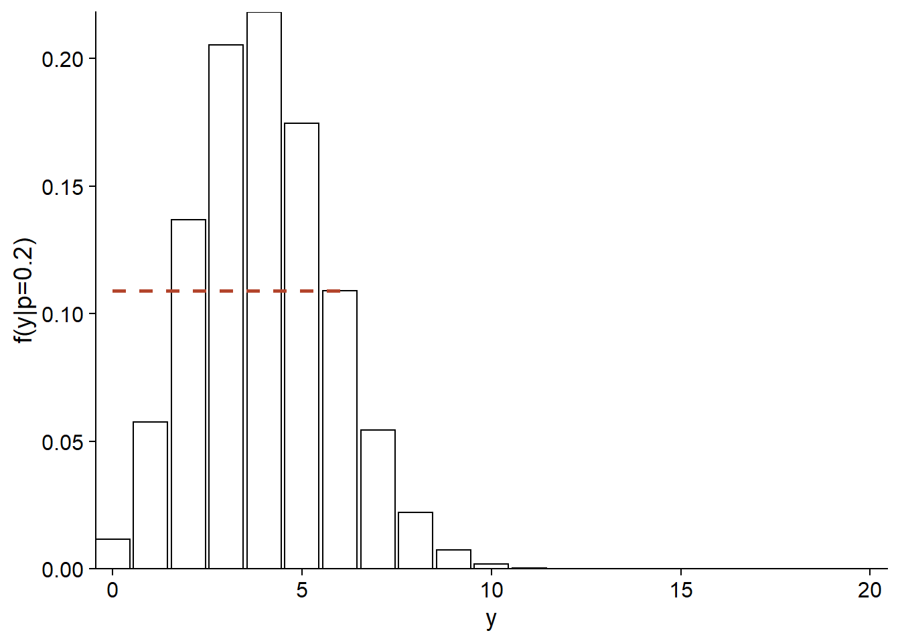
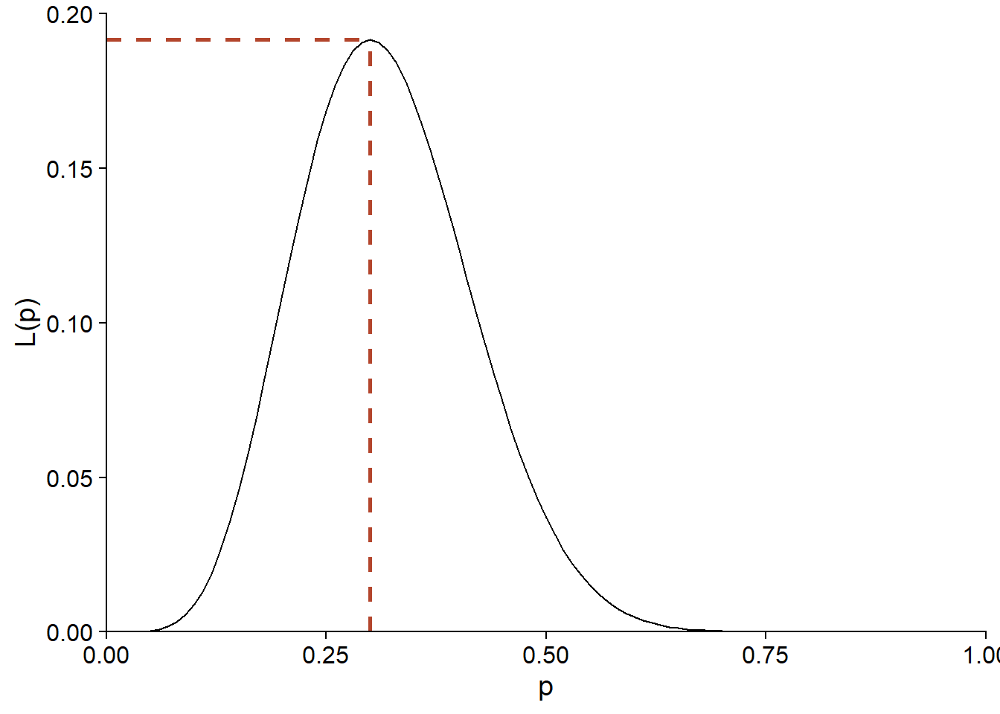
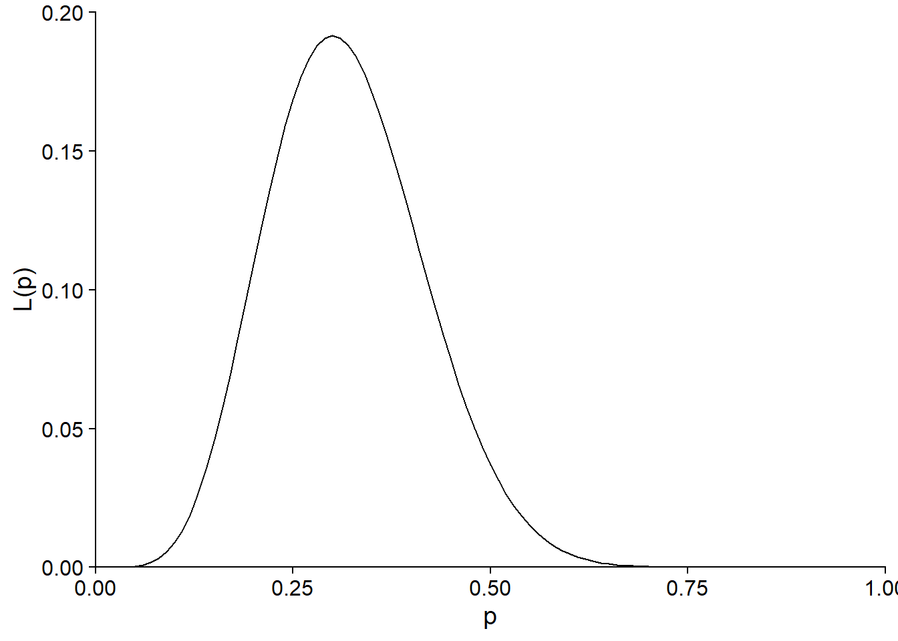
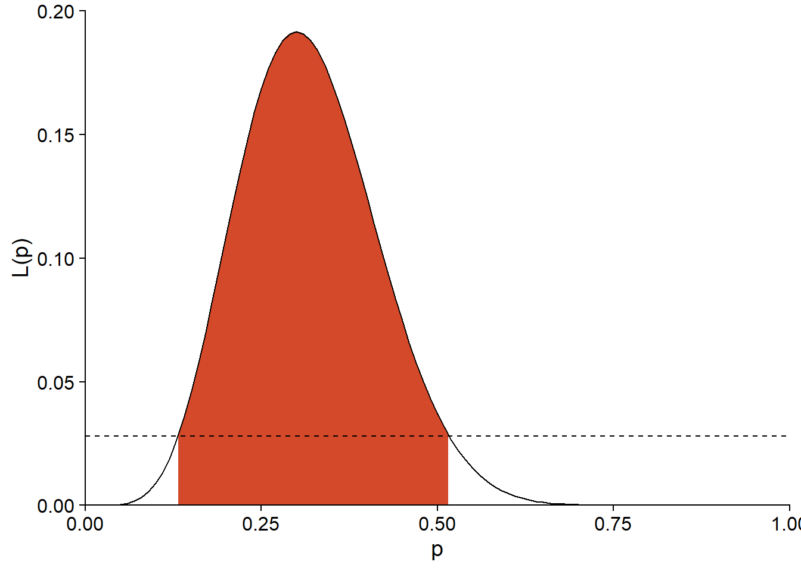
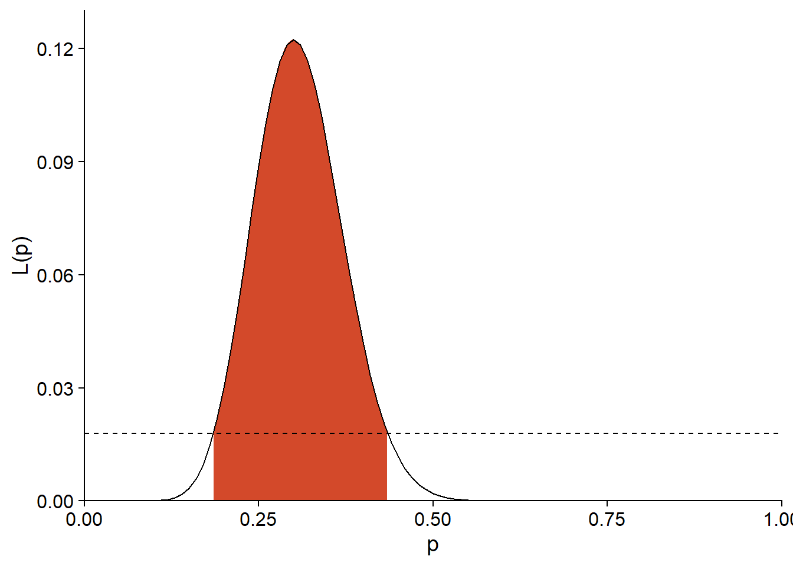
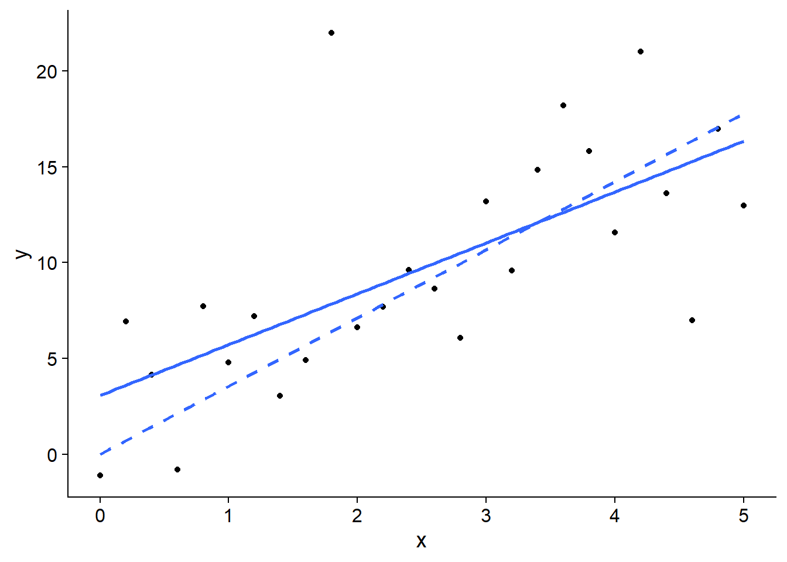
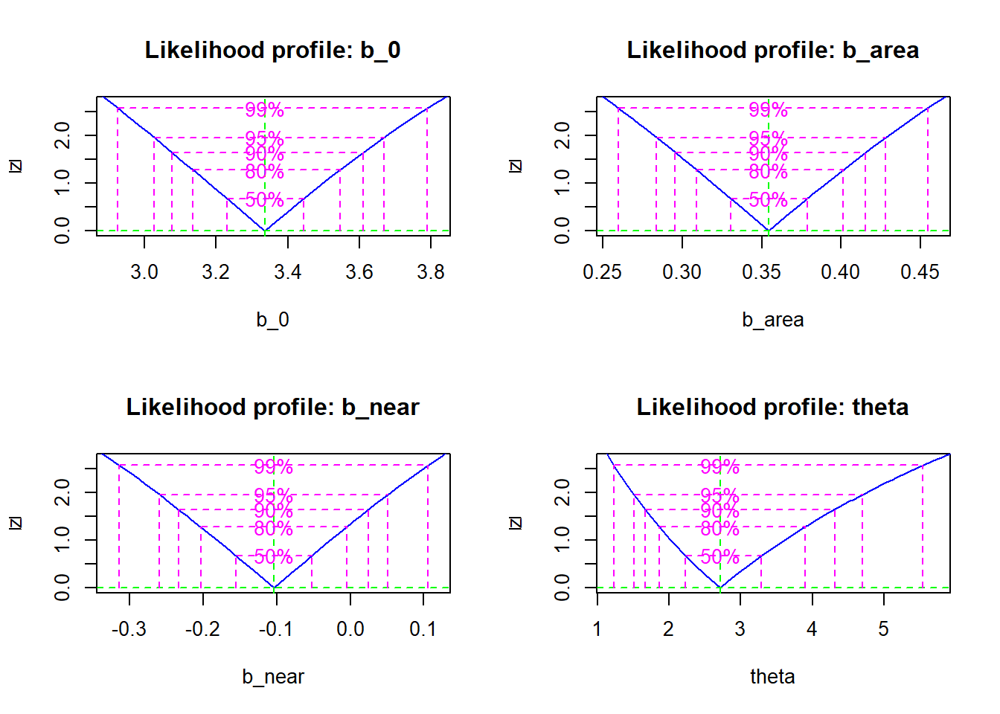

Maximum likelihood
Introduction
Maximum likelihood is a general method for estimating the parameters of a statistical model. For example, suppose we have a series of observations of a random variable \(y\) and a potential statistical model for that variable. This model can include the dependence of \(y\) on other predictor variables, as well as a statistical distribution for the unexplained portion of the variation in \(y\). In general, such a model contains various unknown parameters that must be fitted to the observed data.
In the maximum likelihood method, the best estimates of the parameters of a model are those that maximize the probability of the observed values of the variable. This method can be applied regardless of the mathematical form of the model, allowing us to choose models that are most compatible with our understanding of natural processes, without being limited by models already implemented in statistical software. (The Bayesian methods we will see later in the course also have this versatility).
While the general maximum likelihood method was not presented in the course prior to this one (ECL7102), some of the methods seen in that course were based on this principle:
Model selection using AIC is based on the likelihood function.
Parameter estimation in generalized linear models is performed by maximizing the likelihood.
Parameter estimation in mixed linear models uses a modified version of the maximum likelihood (the restricted maximum likelihood or REML).
Contents
Principle of maximum likelihood
Application of the maximum likelihood in R
Likelihood-ratio test
Calculation of confidence intervals
Estimation of several parameters: profiled likelihood and linear approximation
Principle of maximum likelihood
Likelihood function
Suppose we want to estimate the germination rate of a seed lot by germinating 20 of those seeds under the same conditions. If the variable \(y\) represents the number of successfully germinated seeds for one run of the experiment, then \(y\) follows a binomial distribution:
\[f(y \vert p) = {n \choose y} p^y (1-p)^{n-y} \]
where \(n = 20\) is the number of attempts (number of seeds, in this case), \(p\) is the germination probability for the population and \({n \choose y}\) represents the number of ways to choose \(y\) individuals among \(n\). We write \(f(y \vert p)\) to specify that this distribution of \(y\) is conditional on a specific value of the parameter \(p\).
For example, here is the distribution of \(y\) if \(p = 0.2\). The probability to get \(y = 6\) in this case is approximately 0.11 (dotted line on the graph).
ggplot(data.frame(x = 0:20), aes(x)) +
labs(x = "y", y = "f(y|p=0.2)") +
stat_function(fun = dbinom, n = 21, args = list(size = 20, prob = 0.2),
geom = "bar", color = "black", fill = "white") +
geom_segment(aes(x = 0, xend = 6, y = dbinom(6, 20, 0.2),
yend = dbinom(6, 20, 0.2)),
color = "#b3452c", linetype = "dashed", size = 1) +
scale_x_continuous(expand = c(0, 0)) +
scale_y_continuous(expand = c(0, 0))
If we have observed \(y = 6\), but do not know \(p\), the same equation allows us to calculate the probability of having obtained this \(y\) for each possible value of \(p\). Viewed as a function of \(p\), rather than \(y\), this same equation corresponds to the likelihood function (noted \(L\)) of \(p\).
\[L(p) = f(y \vert p) = {n \choose y} p^y (1-p)^{n-y}\]
Here is the shape of \(L(p)\) for \(y = 6\) and \(n = 20\):
ggplot(NULL) +
labs(x = "p", y = "L(p)") +
stat_function(fun = function(x) dbinom(6, 20, prob = x),
geom = "density") +
geom_segment(aes(x = 0, xend = 0.2, y = dbinom(6, 20, 0.2),
yend = dbinom(6, 20, 0.2)),
color = "#b3452c", linetype = "dashed", size = 1) +
geom_segment(aes(x = 0.2, xend = 0.2, y = 0, yend = dbinom(6, 20, 0.2)),
color = "#b3452c", linetype = "dashed", size = 1) +
scale_x_continuous(limits = c(0, 1), expand = c(0, 0)) +
scale_y_continuous(limits = c(0, 0.2), expand = c(0, 0))
The likelihood of \(p = 0.2\) for this observation of \(y\) is therefore also 0.11. Note that while \(f(y \vert p)\) was a discrete distribution, since \(p\) is a continuous parameter, the likelihood \(L(p)\) is defined for all real values between 0 and 1.
More generally, suppose that \(y = (y_1, y_2, ..., y_n)\) is a vector of observations and \(\theta = (\theta_1, ..., \theta_m)\) is a vector of the adjustable parameters of the model proposed to explain these observations. In this case, the likelihood of a specific vector of values for \(\theta\) corresponds to the joint probability of the observations of \(y\), conditional on those values of \(\theta\). We will see a specific example of the calculation of \(L\) for a multi-parameter model (normal distribution) in the next section.
\[L(\theta) = p(y | \theta)\]
Note: Even if the value of \(L(\theta)\) for a given \(\theta\) is a probability, the likelihood function is not a probability distribution, because in the theory seen here, \(\theta\) is not a random variable. Also, the integral of a likelihood function (area under the curve of \(L(\theta)\) vs. \(\theta\)) is not always equal to 1, unlike that of a probability density.
Maximum likelihood
According to the principle of maximum likelihood, the best estimate of the model’s parameters according to our observations \(y\) is the vector of \(\theta\) values that maximizes the value of \(L(\theta)\).
Example: Binomial distribution
For the binomial model presented above, it is possible to demonstrate (see the calculation in Bolker’s textbook chapter cited in the references) that the maximum likelihood estimate of \(p\) is given by:
\[\hat{p} = \frac{y}{n}\]
In other words, the proportion of successes in the sample is the best estimate of the probability of success in the population. With \(y = 6\) and \(n = 20\), we see that the maximum of \(L(p)\) is obtained for \(p = 0.3\).
ggplot(NULL) +
labs(x = "p", y = "L(p)") +
stat_function(fun = function(x) dbinom(6, 20, prob = x),
geom = "density") +
geom_segment(aes(x = 0, xend = 0.3, y = dbinom(6, 20, 0.3),
yend = dbinom(6, 20, 0.3)),
color = "#b3452c", linetype = "dashed", size = 1) +
geom_segment(aes(x = 0.3, xend = 0.3, y = 0, yend = dbinom(6, 20, 0.3)),
color = "#b3452c", linetype = "dashed", size = 1) +
scale_x_continuous(limits = c(0, 1), expand = c(0, 0)) +
scale_y_continuous(limits = c(0, 0.2), expand = c(0, 0))
Example: Linear model
In the simple linear regression model, the response variable \(y\) follows a normal distribution, with the mean linearly dependent on the predictor \(x\), and with a constant standard deviation \(\sigma\):
\[y \sim N(\beta_0 + \beta_1 x, \sigma)\]
This model includes three parameters to estimate: \(\beta_0\), \(\beta_1\) and \(\sigma\). The probability density for an observation \(y\) is thus given by:
\[f(y \vert \beta_0, \beta_1, \sigma) = \frac{1}{\sigma \sqrt{2 \pi}} e^{-\frac{1}{2} \left( \frac{y - \beta_0 - \beta_1 x}{\sigma} \right)^2}\]
If we perform \(n\) independent observations of \(y\) (each with a predictor value \(x\)), their joint probability density is given by the product (noted \(\Pi\)) of the individual probability densities. Viewed as a function of the parameters, the following equation thus gives the joint likelihood of \(\beta_0\), \(\beta_1\) and \(\sigma\):
\[L(\beta_0, \beta_1, \sigma) = f(y_1, ..., y_n \vert \beta_0, \beta_1, \sigma) = \prod_{i=1}^n \frac{1}{\sigma \sqrt{2 \pi}} e^{-\frac{1}{2} \left( \frac{y_i - \beta_0 - \beta_1 x_i}{\sigma} \right)^2}\]
Log-likelihood
In practice, it is often easier to calculate the log-likelihood, i.e. \(l = \log L\). Since the log is a monotonic function – that is, if \(L\) increases, \(\log L\) increases too – then the value of the parameters that maximizes \(l\) will also maximize \(L\).
Since a logarithm transforms a product into a sum:
\[ \log(xy) = \log(x) + \log(y)\]
the log-likelihood for the linear regression problem above is given by:
\[l(\beta_0, \beta_1, \sigma) = \sum_{i=1}^n \left( \log \left( \frac{1}{\sigma \sqrt{2 \pi}} \right) - \frac{1}{2} \left( \frac{y_i - \beta_0 - \beta_1 x_i}{\sigma} \right)^2 \right)\]
or by simplifying further:
\[l(\beta_0, \beta_1, \sigma) = n \log \left( \frac{1}{\sigma \sqrt{2 \pi}} \right) - \frac{1}{2 \sigma^2} \sum_{i=1}^n \left( y_i - \beta_0 - \beta_1 x_i \right)^2\]
Note that the \(\beta\) coefficients appear only in the second term of the equation, which contains the sum of the squared model residuals. The more this term decreases, the more \(l\) increases, which explains why the estimates of the \(\beta\) coefficients by the method of least squares are the same as those obtained by the minimum likelihood method.
For relatively simple functions, the position of the maximum can be determined by finding the value of each parameter where the derivative of \(l\) according to this parameter is 0. In particular, for the variance of the residuals \(\sigma^2\), the following estimate is obtained:
\[\hat{\sigma^2} = \frac{1}{n} \sum_{i=1}^n \left( y_i - \beta_0 - \beta_1 x_i \right)^2\]
We know that this variance estimator is biased (an unbiased estimate would require $n - $1 in the denominator). The maximum likelihood does not guarantee an unbiased estimate, but the theory indicates that the bias becomes negligible for a large enough sample; in this example, the difference between \(n-1\) and \(n\) becomes less significant as \(n\) increases.
Application of the maximum likelihood in R
Example: Plants of the Galapagos Islands
The file galapagos.csv contains a dataset on the plant species richness for 30 islands of the Galapagos Archipelago. (Source: Johnson, M.P. and Raven, P.H. 1973. Species number and endemism: The Galapagos Archipelago revisited. Science 179: 893–895.)
galap <- read.csv("../donnees/galapagos.csv")
str(galap)## 'data.frame': 30 obs. of 8 variables:
## $ Name : chr "Baltra" "Bartolome" "Caldwell" "Champion" ...
## $ Species : int 58 31 3 25 2 18 24 10 8 2 ...
## $ Endemics : int 23 21 3 9 1 11 0 7 4 2 ...
## $ Area : num 25.09 1.24 0.21 0.1 0.05 ...
## $ Elevation: int 346 109 114 46 77 119 93 168 71 112 ...
## $ Nearest : num 0.6 0.6 2.8 1.9 1.9 8 6 34.1 0.4 2.6 ...
## $ Scruz : num 0.6 26.3 58.7 47.4 1.9 ...
## $ Adjacent : num 1.84 572.33 0.78 0.18 903.82 ...We will model these data with a negative binomial distribution. This distribution is appropriate to represent count data with a variance greater than that predicted by the Poisson distribution.
If a variable \(y\) follows a Poisson distribution, then its mean and variance are both given by the same parameter \(\lambda\) .
\[y \sim \textrm{Pois}(\lambda)\]
The negative binomial distribution has two parameters, \(\mu\) et \(\theta\).
\[y \sim \textrm{NB}(\mu, \theta)\]
In this model, \(y\) has a mean of \(\mu\) and a variance of \(\mu + \frac{\mu^2}{\theta}\). The parameter \(\theta\) is always positive. A small value of \(\theta\) represents a more variable distribution, while if \(\theta\) is very high, the second term is negligible and the distribution approaches the Poisson distribution.
As in Poisson regression, the negative binomial model uses a logarithmic link to relate \(\mu\) to a linear function of the predictors.
\[\log\mu = \beta_0 + \beta_1 x_1 + \beta_2 x_2 + ...\]
For this example, we will fit the model for the number of species (Species) according to the area of the island (Area, in km\(^2\)) and the distance to the nearest island (Nearest, in km). We also take the logarithm of each predictor.
Using the bbmle package
Most models do not allow the location of the maximum likelihood to be derived analytically. In this case, we use optimization algorithms that numerically estimate the maximum value of the (log-)likelihood function and the value of each parameter corresponding to this maximum.
In R, the optim function is a general tool for determining the minimum or maximum of a given function. However, there are also specialized functions for the maximum likelihood estimation problem: in this course, we will use the mle2 function from the bbmle package.
First, we need to write a function that calculates the negative log-likelihood for our problem. By convention, optimization algorithms require a function to be minimized, so instead of maximizing the log-likelihood, we minimize its opposite.
nll_galap <- function(b_0, b_area, b_near, theta) {
mu_sp <- exp(b_0 + b_area * log(galap$Area) + b_near * log(galap$Nearest))
-sum(dnbinom(galap$Species, mu = mu_sp, size = theta, log = TRUE))
}The function nll_galap above accepts four parameters that correspond to the three coefficients of the linear predictor and the \(\theta\) parameter of the negative binomial distribution.
The first line of the function calculates the linear predictor and takes its exponential to obtain the mean number of species
mu_sp. Reminder: In R, most mathematical operations are performed in parallel on vectors. Thus,mu_spcontains 30 values, the first one calculated from the predictor values for island 1, the second one for island 2, and so on.The second line calculates the log-likelihood of each observation according to the binomial model with
dnbinom(also in parallel), calculates their sum then takes the negative.
Note that we specify log = TRUE in dnbinom to compute the log-likelihood. As seen previously, the log-likelihood of a set of observations is equal to the sum of their individual log-likelihoods, as long as the observations are independent.
Finally, we load the bbmle package and call the function mle2. The first argument of that function is our function calculating the negative log-likelihood. We also need to specify for the start argument a list of the initial values of each parameter, which the algorithm will use to start the search for the maximum.
The exact choice of the initial values does not matter in most cases, but it is recommended to give plausible (not too extreme) values of the parameters. We therefore choose a null value for each coefficient, but a positive value for \(\theta\) which must be greater than zero.
library(bbmle)
mle_galap <- mle2(nll_galap, start = list(b_0 = 0, b_area = 0, b_near = 0, theta = 1))
mle_galap##
## Call:
## mle2(minuslogl = nll_galap, start = list(b_0 = 0, b_area = 0,
## b_near = 0, theta = 1))
##
## Coefficients:
## b_0 b_area b_near theta
## 3.3352151 0.3544290 -0.1042696 2.7144722
##
## Log-likelihood: -137.98Executing the function produces several warnings in R, which are not shown here. These probably result from cases where the algorithm tries to assign a negative value to theta and produces an error. In this case, it simply tries a new value.
Interpreting the likelihood
Notice that the maximum log-likelihood in the above result is -137.98, which is a very small value of the likelihood:
exp(-137.98)## [1] 1.191372e-60The likelihood is the probability of obtaining exactly the values appearing in the dataset, according to the model. Considering the many possible values for an observation of the variable and the fact that these possibilities multiply for each subsequent observation, it is not surprising that this probability is very low and even lower for a large sample.
The absolute value of the likelihood is not really interpretable. Rather, it is its relative value that makes it possible to compare the fit of different values of the parameters based on the same observed data.
Nevertheless, it is difficult to work with numbers that are extremely close to zero; this is one of the reasons why the log-likelihood is used in practice.
When to use the maximum likelihood method?
For our example, we could have used the function glm.nb from the MASS package, which is specifically designed to estimate the parameters of a negative binomial regression. By fitting our model with this function, we can verify that the results match the application of mle2.
library(MASS)
glm.nb(Species ~ log(Area) + log(Nearest), galap)##
## Call: glm.nb(formula = Species ~ log(Area) + log(Nearest), data = galap,
## init.theta = 2.714482206, link = log)
##
## Coefficients:
## (Intercept) log(Area) log(Nearest)
## 3.3352 0.3544 -0.1043
##
## Degrees of Freedom: 29 Total (i.e. Null); 27 Residual
## Null Deviance: 138.7
## Residual Deviance: 32.7 AIC: 284The functions available in R and various packages already cover a number of common models, including linear models, generalized linear models, mixed models and other models. Also, many models that do not appear linear can be linearized with an appropriate transformation. For example, a power law between the number of species \(S\) and the habitat area \(A\):
\[S = cA^z\]
can be transformed into a linear relationship by taking the logarithm on each side:
\[\log(S) = \log(c) + z \log(A)\]
When a specialized function is available to estimate the parameters of a model, it is simpler to use it rather than coding the model itself and applying the maximum likelihood method.
However, there are cases where the assumed model for the data does not fit into a standard format. Here are some examples from forest ecology.
Fitting a dispersal kernel (e.g. Clark et al. 1999)
One way to estimate the dispersal capacity of a plant species is to sample seeds falling into traps placed at different distances from parent plants. In particular, we are interested in estimating the dispersal kernel \(f(r)\), which corresponds to the probability that a seed falls at a distance \(r\) from its point of origin.
Suppose that \(y\) represents the number of seeds in one of the traps and can be represented by a negative binomial distribution.
\[y_i \sim \textrm{NB}(\mu_i, \theta)\]
The mean number of seeds in trap \(i\), \(\mu_i\), corresponds to the sum of the contributions of each mother plant \(j\) in the vicinity of the trap; this contribution is equal to the number of seeds produced by a mother plant (\(b\), which we assume to be fixed) multiplied by the dispersal kernel evaluated for the distance \(r_{ij}\) between trap \(i\) and plant \(j\).
\[y_i \sim \textrm{NB}(\sum_j b\times f(r_{ij}), \theta)\]
Since \(f\) is a non-linear function with its own adjustable parameters, and since the mean of \(y\) contains the sum of values of \(f\) evaluated at different distances, it is necessary to write a custom likelihood function and maximize it with a tool like mle2.
Estimation of the neighbourhood competition function (e.g. Canham et al. 2004).
The growth of trees in a forest can be reduced by competition from their neighbours. If we assume that the competition exerted on a tree \(i\) by a neighbour \(j\) increases with the diameter \(D_j\) of this neighbour and decreases with the distance \(r_{ij}\) between the two trees, we can define a competition index (CI) summing the effects of each neighbour on \(i\):
\[CI_i = \sum_j \frac{D_j^{\delta}}{r_{ij}^{\gamma}}\]
We wish to estimate the \(\delta\) and \(\gamma\) exponents appearing in the index from the data. Suppose we have a linear model of the growth \(y_i\) of the tree \(i\) to which we add a term dependent on this index:
\[y_i = \beta_0 + ... + \beta_{CI} \sum_j \frac{D_j^{\delta}}{r_{ij}^{\gamma}}\]
There is no way to simplify this last term, so the maximum likelihood method can be useful to estimate the coefficients (all \(\beta\), \(\gamma\) and \(\delta\)) of this now non-linear model.
Limitations of the maximum likelihood method
Most of the advantageous properties of maximum likelihood estimates, including the absence of bias, are valid at the limit where the sample size is large. What constitutes a large enough sample size depends on the model and in particular on the number of parameters to be estimated.
In practice, the maximum likelihood is obtained by a numerical algorithm seeking the maximum by an iterative process. A complex likelihood function could have several local maxima (points where the function is maximized with respect to parameter values near the point), in which case it is not guaranteed that the algorithm finds the global maximum (the one with the highest likelihood overall).
Likelihood-ratio test
Test on the value of a parameter
It is possible to use the likelihood function to test a hypothesis about the value of a parameter.
For example, consider the likelihood function calculated at the beginning of the class to estimate the probability of germination of a seed lot, if 6 seeds germinated out of 20 attempts.
ggplot(NULL) +
labs(x = "p", y = "L(p)") +
stat_function(fun = function(x) dbinom(6, 20, prob = x),
geom = "density") +
scale_x_continuous(limits = c(0, 1), expand = c(0, 0)) +
scale_y_continuous(limits = c(0, 0.2), expand = c(0, 0))
In this case, the maximum likelihood estimate is \(\hat{p} = 0.3\). Suppose that the seed supplier claims that the germination rate is 50%. Is the result of the experiment consistent with this value?
The likelihood corresponding to the null hypothesis (\(p_0 = 0.5\)) is about \(L(p_0) = 0.037\), compared to a maximum of \(L(\hat{p}) = 0.192\).
l_0 <- dbinom(6, 20, prob = 0.5)
l_max <- dbinom(6, 20, prob = 0.3)
c(l_0, l_max)## [1] 0.03696442 0.19163898The ratio between these two \(L\) values is used to define a statistic for the likelihood-ratio test. This statistic is -2 times the logarithm of the ratio between the likelihood of the parameter under the null hypothesis and the estimated maximum likelihood.
\[- 2 \log \left( \frac{L(\theta_0)}{L(\hat{\theta})} \right)\]
Equivalently, we can replace the ratio by a difference of the log-likelihoods:
\[- 2 \left( l(\theta_0) - l(\hat{\theta}) \right)\]
The factor -2 is added so that, if the null hypothesis is true and the sample is large enough, the distribution of the statistic approaches a \(\chi^2\) distribution with 1 degree of freedom.
In our example, the likelihood-ratio statistic is equal to 3.29.
rv <- -2*log(l_0 / l_max)
rv## [1] 3.291315The probability of obtaining a ratio greater than or equal to this value, if the null hypothesis \(p = 0.5\) is true, can be approximated with the cumulative \(\chi^2\) distribution.
1 - pchisq(rv, df = 1)## [1] 0.06964722Note: The likelihood-ratio test cannot be applied if the null hypothesis is at the limit of possible values for a parameter. For example, for the parameter \(p\) of a binomial distribution, we cannot use this test for the null hypothesis \(p_0 = 0\) or \(p_0 = 1\).
Model comparison
The likelihood-ratio test is also used to compare two models. In this case, the models must be nested, i.e. the simpler model must contain a subset of the parameters of the more complex model. For example, suppose a linear regression model with 1 predictor and a second model with 3 predictors.
- M1: \(y = \beta_0 + \beta_1 x_1 + \epsilon\)
- M2: \(y = \beta_0 + \beta_1 x_1 + \beta_2 x_2 + \beta_3 x_3 + \epsilon\)
In this case, M1 can be seen as a version of M2 where \(\beta_2\) and \(\beta_3\) are set to 0. If M1 is the true model for the data, the likelihood ratio statistic between the two models approximately follows a \(\chi^2\) distribution, with a number of degrees of freedom equal to the difference in the number of estimated parameters between the two models (here, 2).
\[- 2 \left( l_{M1} - l_{M2} \right) \sim \chi^2(2)\]
In the previous course ECL7102, we used the Akaike information criterion (AIC) to compare models:
\[AIC = - 2 \log L + 2K = -2l + 2K\]
In this formula, \(K\) is the number of adjustable parameters in the model. We also saw a corrected version of AIC (AICc) for “small” samples (when \(N/K\) < 30, where \(N\) is the sample size).
The AIC has a broader scope than the likelihood-ratio test because more than two models can be compared, whether they are nested or not. In cases where the two methods are applicable, their objectives are different:
AIC aims to identify the model that would best predict the response for a new sample of the same population;
the likelihood-ratio test indicates whether the observed difference between the fit of the simpler and the more complex model is consistent with the assumption that the simpler model is correct.
Calculation of confidence intervals
If \(\hat{\theta}\) is the maximum likelihood estimate for a parameter \(\theta\), we can obtain a confidence interval for this parameter by using the relationship between hypothesis testing and confidence interval:
If we cannot reject the null hypothesis \(\theta = \theta_0\) with a significance threshold \(\alpha\), therefore \(\theta_0\) is included in the \(100(1-\alpha)\%\) confidence interval for \(\theta\).
For example, the limits of the 95% confidence interval are the values of \(\theta\) where the likelihood-ratio statistic is equal to the 95th percentile of the \(\chi^2\) distribution; this is the maximum value of the statistic that is not rejected at a threshold \(\alpha = 0.05\).
\[- 2 \left( l(\theta_0) - l(\hat{\theta}) \right) = \chi^2_{0.95}(1)\]
Reminder: The \(\chi^2\) test is one-sided, because only high values of the statistic indicate a significant deviation from the null hypothesis.
If we isolate \(\theta_0\) in the equation, we get:
\[l(\theta_0) = l(\hat{\theta}) - \frac{\chi^2_{0.95}(1)}{2}\]
We must therefore find the values of \(\theta\) for which the log-likelihood is about 1.92 lower than the maximum.
qchisq(0.95, df = 1) / 2## [1] 1.920729Example
For our seed germination example (\(\hat{p} = 0.3\)), the 95% interval limits correspond to \(L = 0.0281\).
exp(dbinom(6, 20, 0.3, log = TRUE) - qchisq(0.95, df = 1)/2)## [1] 0.02807512This threshold is represented by the dotted line on the graph below and corresponds to an interval of (0.132, 0.516) for \(p\).
ggplot(NULL) +
labs(x = "p", y = "L(p)") +
stat_function(geom = "area", fill = "#d3492a", n = 1000,
fun = function(x) ifelse(x > 0.132 & x < 0.516,
dbinom(6, 20, prob = x), NA)) +
stat_function(fun = function(x) dbinom(6, 20, prob = x),
geom = "density") +
geom_hline(yintercept = 0.0279, linetype = "dashed") +
scale_x_continuous(limits = c(0, 1), expand = c(0, 0)) +
scale_y_continuous(limits = c(0, 0.2), expand = c(0, 0))
For an experiment with the same estimate of \(\hat{p}\), but a larger sample \((n = 50, y = 15)\), the limit of \(L\) for the 95% interval is 0.0179.
exp(dbinom(15, 50, 0.3, log = TRUE) - qchisq(0.95, df = 1)/2)## [1] 0.01792382As we can see below, the likelihood function and thus the confidence interval are narrower.
ggplot(NULL) +
labs(x = "p", y = "L(p)") +
stat_function(geom = "area", fill = "#d3492a", n = 1000,
fun = function(x) ifelse(x > 0.185 & x < 0.435,
dbinom(15, 50, prob = x), NA)) +
stat_function(fun = function(x) dbinom(15, 50, prob = x),
geom = "density") +
geom_hline(yintercept = 0.0179, linetype = "dashed") +
scale_x_continuous(limits = c(0, 1), expand = c(0, 0)) +
scale_y_continuous(breaks = seq(0, 0.12, 0.03),
limits = c(0, 0.13), expand = c(0, 0))
Profile likelihood
If \(m\) parameters are estimated at the same time, the likelihood function is not a curve, but rather a surface in \(m\) dimensions. When calculating the likelihood ratio \(- 2 \left( l(\theta_{0}) - l(\hat{\theta}) \right)\) for different values \(\theta_{0}\) of one of the parameters, one must therefore choose which value to give to the other \(m - 1\) parameters. A simple solution would be to set all the other parameters to their estimated maximum likelihood value, but this assumes that these estimates are independent. In general, if one sets \(\theta_0\) to a value other than \(\hat{\theta}\), the maximum likelihood estimate may change.
For example, in the linear regression model shown below, the best estimate of slope changes if the intercept is set to 0 (dotted line).
## `geom_smooth()` using formula 'y ~ x'
In order to create a curve of \(l(\theta_0)\) for different values of the parameter, it is thus necessary for each fixed value of \(\theta_0\) to find the maximum likelihood for the rest of the parameters. The resulting curve is called the profile likelihood.
The profile function of the bbmle package evaluates the profiled likelihood of each parameter from the result of mle2. Here is the result obtained for the model fitted earlier (negative binomial regression of the number of plant species in the Galapagos Islands).
galap_pro <- profile(mle_galap)
plot(galap_pro)
For each parameter, the graph shows the square root of the likelihood-ratio statistic \(\sqrt{- 2 \left( l(\theta_{0}) - l(\hat{\theta}) \right)}\) for the profile likelihood. The square root transformation allows us to quickly see if the log of the profile likelihood is approximately quadratic (see next section), which would result in a symmetrical “V” after transformation.
Different confidence intervals are superimposed on the graph; these intervals can also be obtained directly with the function confint.
confint(galap_pro, level = 0.95)## 2.5 % 97.5 %
## b_0 3.0259619 3.66809720
## b_area 0.2837173 0.42822254
## b_near -0.2600032 0.05105544
## theta 1.5113578 4.69693757Quadratic approximation
Since calculating the profile likelihood for one parameter requires repeated fitting of the other parameters of the model, this method is very time consuming for a complex model.
A more approximate, but much faster, method is to assume that the log-likelihood follows a quadratic form. With only one parameter, this quadratic form is a parabola centered on the maximum likelihood: \(- 2 \left( l(\theta_{0}) - l(\hat{\theta}) \right) = a (\theta_{0} - \hat{\theta})^2\). Here, the coefficient \(a\) measures the curvature of the parabola. As we saw in the binomial example above, the more pronounced the curvature, the more precise the parameter estimate is.
In fact, if the quadratic approximation is good, the variance of \(\hat{\theta}\) (thus the square of its standard error) is the inverse of the second derivative of \(-l\), which measures the curvature at maximum.
\[\frac{\textrm{d}^2(-l)}{\textrm{d}\theta^2} = \frac{1}{\sigma_{\hat{\theta}}^2}\]
With \(m\) parameters, the curvature in \(m\) dimensions around the maximum is represented by a \(m \times m\) matrix of the second partial derivatives of \(-l\), called the Fisher information matrix. By inverting this matrix, we obtain the variances and covariances of the estimates. Assuming that the quadratic approximation is correct, these variances and covariances are sufficient to obtain the desired confidence intervals for each parameter.
In the bbmle package, one can calculate the confidence intervals according to the quadratic approximation by specifying method = "quad" in the confint function:
confint(mle_galap, level = 0.95, method = "quad")## 2.5 % 97.5 %
## b_0 3.0246480 3.6457823
## b_area 0.2847479 0.4241100
## b_near -0.2536734 0.0451341
## theta 1.1781122 4.2508322Here we note that the estimates are close to those of the profile likelihood, except for \(\theta\). By inspecting the profile likelihood graphs above, it is apparent that the profile for \(\theta\) departs further from the quadratic form.
Summary
For a statistical model, the likelihood is a function that associates to each value of the parameters the probability of the observed data, conditional to this parameterization. According to the principle of maximum likelihood, the best estimate of the parameters is the one that maximizes the likelihood.
In order to determine the maximum likelihood for a custom model in R, we must create a function that calculates the log-likelihood as a function of the parameters and then use an optimization algorithm to find the maximum.
The likelihood-ratio test is used to test a hypothesis about the value of a parameter estimated using the maximum likelihood, to obtain a confidence interval for that parameter, or to compare two nested models.
To estimate the uncertainty of an estimate in a model with several adjustable parameters, we can either calculate the profile likelihood for this parameter or use the quadratic approximation.
References
Bolker, B.M. (2008) Ecological models and data in R. Princeton University Press, Princeton, New Jersey. (Chapitre 6 sur le maximum de vraisemblance)
Canham, C.D., LePage, P.T. and Coates, K.D. (2004) A neighborhood analysis of canopy tree competition: effects of shading versus crowding. Canadian Journal of Forest Research 34: 778–787.
Clark, J.S., Silman, M., Kern, R., Macklin, E. and HilleRisLambers, J. (1999) Seed dispersal near and far: Patterns across temperate and tropical forests. Ecology 80: 1475–1494.